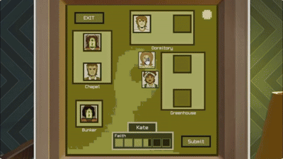
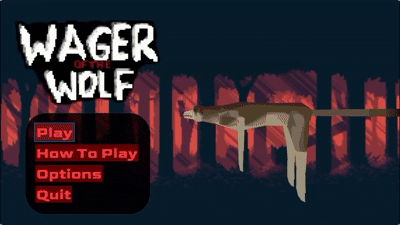
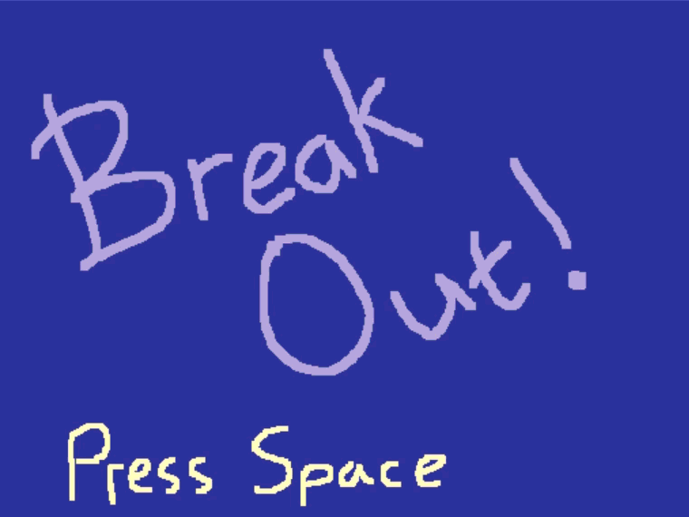

Projects

Nothing's Wrong in Subsistia
Professional Project University Module. Grade A
Runner up Team Project award at Gamebridge UK
Single player social deduction game. Play as the leader of a 50’s-Americana-Obsessed cult. Keep the faith of your family, and be wary of the traitor.
Worked in a team of 8 for a group project in university to create a game for a client with the brief 'Confined Environment'
Unity, C# - Gameplay Programming, Design
View on Itch
Wager of the Wolf
Game Programming and System Architectures University module. Grade A
Team of four programmers using Sony PS5 development kits
2.5D platformer where you play as a wolf chasing a vampire.
C++ - Gameplay programming, Engine Programming, Optimisation

weeBitEngine
Game Engine Development University module
Created my own framework from the ground up using libraries such as SDL2. Supports tilemap integration from Tiled.
Engine showcased by a breakout clone

Carnimals
Worked with a team of 6 to create a prototype for a mobile spelling game for kids
Unreal, Blueprints, C++ - Production, Design, Programming, Mobile development